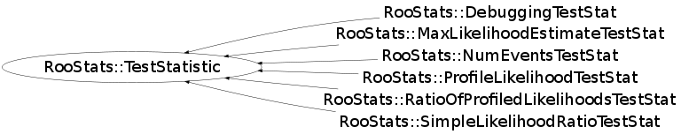

Function Members (Methods)
This is an abstract class, constructors will not be documented.
Look at the header to check for available constructors.
public:
| virtual | ~TestStatistic() |
| static TClass* | Class() |
| virtual Double_t | Evaluate(RooAbsData& data, RooArgSet& nullPOI) |
| virtual const TString | GetVarName() const |
| virtual TClass* | IsA() const |
| RooStats::TestStatistic& | operator=(const RooStats::TestStatistic&) |
| virtual bool | PValueIsRightTail() const |
| virtual void | ShowMembers(TMemberInspector& insp) |
| virtual void | Streamer(TBuffer& b) |
| void | StreamerNVirtual(TBuffer& b) |
Class Charts
{kind=link}
{kind=link}
{kind=link}
{kind=link}

Function documentation
Double_t Evaluate(RooAbsData& data, RooArgSet& nullPOI)
Main interface to evaluate the test statistic on a dataset given the values for the Null Parameters Of Interest.
const TString GetVarName() const
bool PValueIsRightTail(void)
Defines the sign convention of the test statistic. Overwrite function if necessary.
{ return true; }